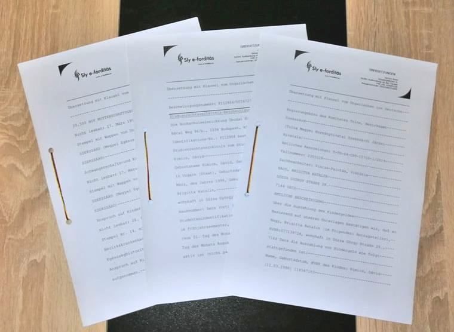
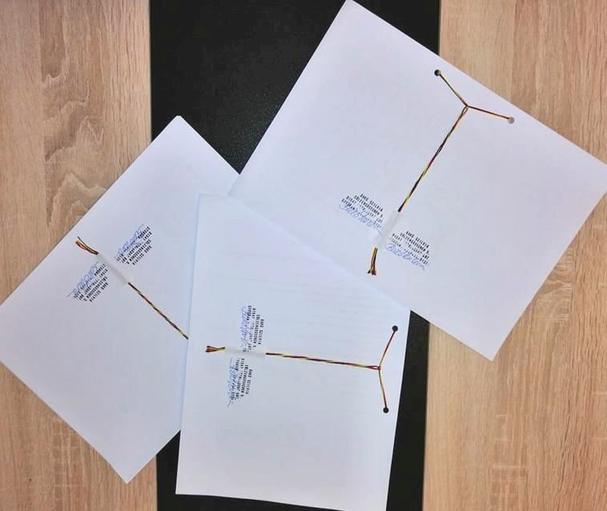

Üdvözöljük oldalunkon!
Minőségi fordítást szeretne rövid határidővel, sorbaállás nélkül, magyar árakon és nem utolsó sorban magyar ügyintézéssel Németországban? Megtalálta!
Korábban magyarországi vállalkozásunkban foglalkoztunk fordításszervezéssel 2007-től. Németországba áttelepülve most új vállalkozás keretében, új weboldallal, de a régi minőségben és természetesen a bevált fordítói csapattal vállaljuk magánszemélyek és vállalkozások anyagainak fordítását, lektorálását.
Fordítások készítése
Az alábbi témakörökben készítünk gyors és minőségi fordításokat:
- általános szövegek, céglevelezés
- közgazdaság, pénzügy, bankügy
- jog, politika
- egészségügy, vegyészet, gyógyszerészet, környezetvédelem
- idegenforgalom, kereskedelem, művészet
- műszaki: audió termékek leírása, számítástechnika, építőipar, villamosság
ÚJDONSÁG: a németországi mindennapos élethez szükséges nyomtatványok fordítása.
A munkát elvégző fordító(k) kiválasztásakor figyelembe vesszük a fordító szakmai háttértudását, gyakorlatát és a határidőt a mennyiség függvényében.
Tanúsított, záradékkal ellátott fordítás
Kérésre az okmányok, szerződések fordítását az adott nyelven záradékkal és bélyegzővel látjuk el, tanúsítva, hogy a fordítás tartalmilag és szerkezetileg megegyezik az eredeti anyaggal. A formázás kizárja az utólagos szövegbe írás lehetőségét, javítását. A záradék tartalmazza a munkát elvégző szakfordító nevét is, aki garantálja a fordítás helyességét és az egyezőséget.
Fontos megemlíteni, hogy ez nem azonos a hitelesített fordítással! Bizonyos esetekben nem elegendő az általunk záradékolt fordítás (pl. bírósági eljárások során), hiteles fordításra van szükség. Megrendelés előtt kérjük tájékozódjon, hogy Önnek melyikre lesz majd szüksége!
 Lektorálás
A lektorálás nélküli normál fordítás esetén a szakfordító által készített anyagok nyersfordítása készül el, ahol a nyelvi érthetőség az elvárás.
A célnyelvre lefordított szövegeket a megrendelő külön kérésére lektoráljuk, azaz nyelvhelyességileg, szakmailag, illetve stilisztikailag ellenőriztetjük. A lektorálást minden esetben anyanyelvi szakképzett fordító végzi, így a szövegbe nem illeszkedő szakkifejezések és apróbb szerkezeti hibák javításra kerülnek.
Jogi érvényű szövegek, nyomdakész anyagok, valamint speciális szakszövegek fordításáért csak lektorálás mellett vállalunk felelősséget.